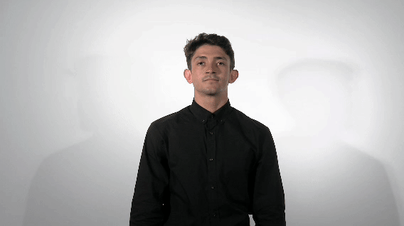
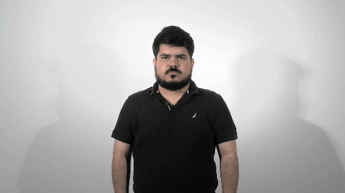
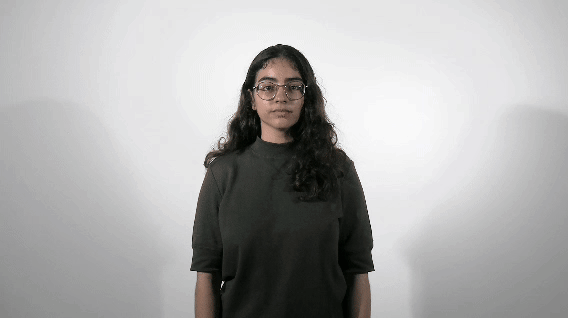
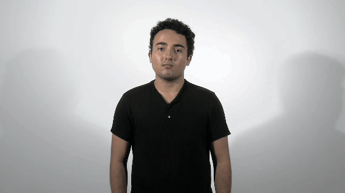
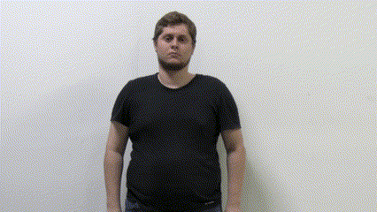
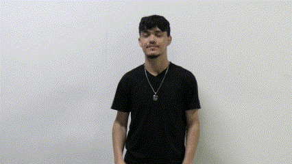
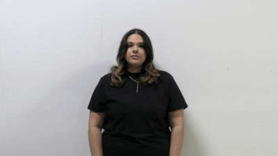
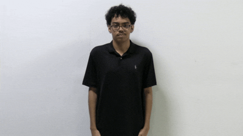
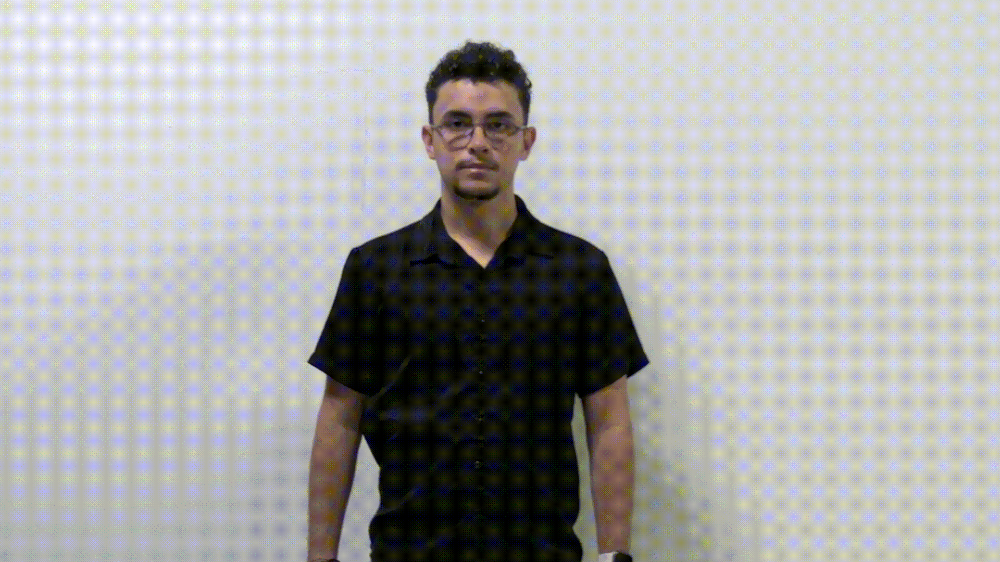

Somos un grupo de estudiantes de Ciencias de Cómputos de La Universidad del Sagrado Corazón que quiere ir más allá de los salones de clase. Nos mueve la idea de usar la tecnología para hacer cosas que realmente tengan impacto, especialmente en nuestra comunidad cercana. Por eso, creamos una app de lenguaje de señas puertorriqueño, con el fin de mejorar la comunicación y crear espacios más accesibles e inclusivos para todos. Queremos que lo que aprendemos sirva para algo más grande, para conectar con la gente y dejar una huella positiva en nuestra isla.








